import numpy as np
import pandas as pd
import matplotlib.pyplot as plt
import seaborn as sns
import sklearn.preprocessing
#---#}
from autogluon.tabular import TabularPredictor
from autogluon.timeseries import TimeSeriesDataFrame, TimeSeriesPredictor
from autogluon.common import space
#---#
import warnings
warnings.filterwarnings('ignore')14wk-59: 자전거대여 / 시계열자료분석?(Autogluon)
최규빈
2023-12-01
1. 강의영상
2. Imports
3. Data
ref: https://www.kaggle.com/competitions/bike-sharing-demand
- 자료 다운로드
!kaggle competitions download -c bike-sharing-demandWarning: Your Kaggle API key is readable by other users on this system! To fix this, you can run 'chmod 600 /home/coco/.kaggle/kaggle.json'
Downloading bike-sharing-demand.zip to /home/coco/Dropbox/Class/STBDA23/posts
100%|█████████████████████████████████████████| 189k/189k [00:00<00:00, 459kB/s]
100%|█████████████████████████████████████████| 189k/189k [00:00<00:00, 459kB/s]!unzip bike-sharing-demand.zip -d dataArchive: bike-sharing-demand.zip
inflating: data/sampleSubmission.csv
inflating: data/test.csv
inflating: data/train.csv sampleSubmission = pd.read_csv('data/sampleSubmission.csv')
df_train = pd.read_csv('data/train.csv')
df_test = pd.read_csv('data/test.csv') !rm -rf data
!rm bike-sharing-demand.zip- 자료관찰
set(df_train['weather']){1, 2, 3, 4}display("train",df_train,"test",df_test)'train'| datetime | season | holiday | workingday | weather | temp | atemp | humidity | windspeed | casual | registered | count | |
|---|---|---|---|---|---|---|---|---|---|---|---|---|
| 0 | 2011-01-01 00:00:00 | 1 | 0 | 0 | 1 | 9.84 | 14.395 | 81 | 0.0000 | 3 | 13 | 16 |
| 1 | 2011-01-01 01:00:00 | 1 | 0 | 0 | 1 | 9.02 | 13.635 | 80 | 0.0000 | 8 | 32 | 40 |
| 2 | 2011-01-01 02:00:00 | 1 | 0 | 0 | 1 | 9.02 | 13.635 | 80 | 0.0000 | 5 | 27 | 32 |
| 3 | 2011-01-01 03:00:00 | 1 | 0 | 0 | 1 | 9.84 | 14.395 | 75 | 0.0000 | 3 | 10 | 13 |
| 4 | 2011-01-01 04:00:00 | 1 | 0 | 0 | 1 | 9.84 | 14.395 | 75 | 0.0000 | 0 | 1 | 1 |
| ... | ... | ... | ... | ... | ... | ... | ... | ... | ... | ... | ... | ... |
| 10881 | 2012-12-19 19:00:00 | 4 | 0 | 1 | 1 | 15.58 | 19.695 | 50 | 26.0027 | 7 | 329 | 336 |
| 10882 | 2012-12-19 20:00:00 | 4 | 0 | 1 | 1 | 14.76 | 17.425 | 57 | 15.0013 | 10 | 231 | 241 |
| 10883 | 2012-12-19 21:00:00 | 4 | 0 | 1 | 1 | 13.94 | 15.910 | 61 | 15.0013 | 4 | 164 | 168 |
| 10884 | 2012-12-19 22:00:00 | 4 | 0 | 1 | 1 | 13.94 | 17.425 | 61 | 6.0032 | 12 | 117 | 129 |
| 10885 | 2012-12-19 23:00:00 | 4 | 0 | 1 | 1 | 13.12 | 16.665 | 66 | 8.9981 | 4 | 84 | 88 |
10886 rows × 12 columns
'test'| datetime | season | holiday | workingday | weather | temp | atemp | humidity | windspeed | |
|---|---|---|---|---|---|---|---|---|---|
| 0 | 2011-01-20 00:00:00 | 1 | 0 | 1 | 1 | 10.66 | 11.365 | 56 | 26.0027 |
| 1 | 2011-01-20 01:00:00 | 1 | 0 | 1 | 1 | 10.66 | 13.635 | 56 | 0.0000 |
| 2 | 2011-01-20 02:00:00 | 1 | 0 | 1 | 1 | 10.66 | 13.635 | 56 | 0.0000 |
| 3 | 2011-01-20 03:00:00 | 1 | 0 | 1 | 1 | 10.66 | 12.880 | 56 | 11.0014 |
| 4 | 2011-01-20 04:00:00 | 1 | 0 | 1 | 1 | 10.66 | 12.880 | 56 | 11.0014 |
| ... | ... | ... | ... | ... | ... | ... | ... | ... | ... |
| 6488 | 2012-12-31 19:00:00 | 1 | 0 | 1 | 2 | 10.66 | 12.880 | 60 | 11.0014 |
| 6489 | 2012-12-31 20:00:00 | 1 | 0 | 1 | 2 | 10.66 | 12.880 | 60 | 11.0014 |
| 6490 | 2012-12-31 21:00:00 | 1 | 0 | 1 | 1 | 10.66 | 12.880 | 60 | 11.0014 |
| 6491 | 2012-12-31 22:00:00 | 1 | 0 | 1 | 1 | 10.66 | 13.635 | 56 | 8.9981 |
| 6492 | 2012-12-31 23:00:00 | 1 | 0 | 1 | 1 | 10.66 | 13.635 | 65 | 8.9981 |
6493 rows × 9 columns
- train/test가 나누어진 시점 해석
display("train",df_train[::24][:20], "test",df_test[::24][:10])'train'| datetime | season | holiday | workingday | weather | temp | atemp | humidity | windspeed | casual | registered | count | |
|---|---|---|---|---|---|---|---|---|---|---|---|---|
| 0 | 2011-01-01 00:00:00 | 1 | 0 | 0 | 1 | 9.84 | 14.395 | 81 | 0.0000 | 3 | 13 | 16 |
| 24 | 2011-01-02 00:00:00 | 1 | 0 | 0 | 2 | 18.86 | 22.725 | 88 | 19.9995 | 4 | 13 | 17 |
| 48 | 2011-01-03 01:00:00 | 1 | 0 | 1 | 1 | 8.20 | 8.335 | 44 | 27.9993 | 0 | 2 | 2 |
| 72 | 2011-01-04 04:00:00 | 1 | 0 | 1 | 1 | 5.74 | 9.090 | 63 | 6.0032 | 0 | 2 | 2 |
| 96 | 2011-01-05 05:00:00 | 1 | 0 | 1 | 1 | 9.02 | 11.365 | 47 | 11.0014 | 0 | 3 | 3 |
| 120 | 2011-01-06 06:00:00 | 1 | 0 | 1 | 2 | 5.74 | 8.335 | 63 | 7.0015 | 0 | 36 | 36 |
| 144 | 2011-01-07 07:00:00 | 1 | 0 | 1 | 1 | 8.20 | 10.605 | 69 | 8.9981 | 8 | 76 | 84 |
| 168 | 2011-01-08 07:00:00 | 1 | 0 | 0 | 2 | 6.56 | 9.090 | 74 | 7.0015 | 1 | 8 | 9 |
| 192 | 2011-01-09 07:00:00 | 1 | 0 | 0 | 1 | 3.28 | 4.545 | 53 | 12.9980 | 1 | 5 | 6 |
| 216 | 2011-01-10 07:00:00 | 1 | 0 | 1 | 1 | 4.92 | 6.060 | 50 | 15.0013 | 2 | 75 | 77 |
| 240 | 2011-01-11 09:00:00 | 1 | 0 | 1 | 2 | 7.38 | 9.850 | 51 | 11.0014 | 3 | 127 | 130 |
| 264 | 2011-01-12 11:00:00 | 1 | 0 | 1 | 1 | 8.20 | 9.090 | 51 | 26.0027 | 3 | 32 | 35 |
| 288 | 2011-01-13 11:00:00 | 1 | 0 | 1 | 2 | 8.20 | 8.335 | 44 | 30.0026 | 4 | 33 | 37 |
| 312 | 2011-01-14 12:00:00 | 1 | 0 | 1 | 1 | 8.20 | 9.850 | 44 | 16.9979 | 2 | 59 | 61 |
| 336 | 2011-01-15 12:00:00 | 1 | 0 | 0 | 1 | 9.84 | 11.365 | 48 | 15.0013 | 15 | 74 | 89 |
| 360 | 2011-01-16 12:00:00 | 1 | 0 | 0 | 1 | 9.84 | 10.605 | 41 | 19.0012 | 29 | 75 | 104 |
| 384 | 2011-01-17 12:00:00 | 1 | 1 | 0 | 2 | 7.38 | 9.850 | 47 | 8.9981 | 10 | 70 | 80 |
| 408 | 2011-01-19 00:00:00 | 1 | 0 | 1 | 2 | 9.02 | 13.635 | 93 | 0.0000 | 0 | 3 | 3 |
| 432 | 2011-02-01 01:00:00 | 1 | 0 | 1 | 2 | 6.56 | 9.090 | 69 | 7.0015 | 0 | 3 | 3 |
| 456 | 2011-02-02 02:00:00 | 1 | 0 | 1 | 3 | 9.02 | 11.365 | 93 | 8.9981 | 4 | 0 | 4 |
'test'| datetime | season | holiday | workingday | weather | temp | atemp | humidity | windspeed | |
|---|---|---|---|---|---|---|---|---|---|
| 0 | 2011-01-20 00:00:00 | 1 | 0 | 1 | 1 | 10.66 | 11.365 | 56 | 26.0027 |
| 24 | 2011-01-21 00:00:00 | 1 | 0 | 1 | 2 | 9.84 | 11.365 | 70 | 16.9979 |
| 48 | 2011-01-22 00:00:00 | 1 | 0 | 0 | 1 | 1.64 | 1.515 | 45 | 16.9979 |
| 72 | 2011-01-23 01:00:00 | 1 | 0 | 0 | 1 | 1.64 | 3.790 | 57 | 7.0015 |
| 96 | 2011-01-24 03:00:00 | 1 | 0 | 1 | 1 | 1.64 | 1.515 | 45 | 16.9979 |
| 120 | 2011-01-25 04:00:00 | 1 | 0 | 1 | 1 | 5.74 | 8.335 | 74 | 7.0015 |
| 144 | 2011-01-26 06:00:00 | 1 | 0 | 1 | 3 | 8.20 | 9.090 | 86 | 19.0012 |
| 168 | 2011-01-28 05:00:00 | 1 | 0 | 1 | 2 | 7.38 | 10.605 | 80 | 7.0015 |
| 192 | 2011-01-29 06:00:00 | 1 | 0 | 0 | 1 | 6.56 | 9.090 | 64 | 8.9981 |
| 216 | 2011-01-30 07:00:00 | 1 | 0 | 0 | 1 | 5.74 | 10.605 | 86 | 0.0000 |
- 자료가 세개의 토막으로 되어있어..!!
- 시계열분석을 해야하나?
코드들을 확인 (https://www.kaggle.com/c/bike-sharing-demand/code?competitionId=3948&sortBy=voteCount) -> 시계열분석은 아닌것 같지않어?
- 데이터분석전략: 딱히 기세를 모델링할 필요를 못느끼겠음.
- 오히려 시계열을 피처엔지어링하여 회귀문제로 바꾸는게 적절하다.
- 시계열 -> 요일,시간의 피처추출 + 외부자료를 활용하여 휴일유무 체크 + 외부자료를 해당요일의 날씨체크 -> lm(y~X)의 회귀문제로 해석!
4. 적합1 -> 제출1
A. 적합
set(df_train.columns) - set(df_test.columns){'casual', 'count', 'registered'}sampleSubmission.head()| datetime | count | |
|---|---|---|
| 0 | 2011-01-20 00:00:00 | 0 |
| 1 | 2011-01-20 01:00:00 | 0 |
| 2 | 2011-01-20 02:00:00 | 0 |
| 3 | 2011-01-20 03:00:00 | 0 |
| 4 | 2011-01-20 04:00:00 | 0 |
- count를 맞추자!
- 데이터 전처리(step1)
df_train_featured = df_train.copy()
df_test_featured = df_test.copy()
#---#
df_train_featured = df_train_featured.drop(['casual','registered'],axis=1)- step2~4
# step1 -- pass
# step2
predictr = TabularPredictor(label='count')
# step3
predictr.fit(df_train_featured)
# step4
yhat = predictr.predict(df_train_featured)
yyhat = predictr.predict(df_test_featured)No path specified. Models will be saved in: "AutogluonModels/ag-20231210_063818/"
Beginning AutoGluon training ...
AutoGluon will save models to "AutogluonModels/ag-20231210_063818/"
AutoGluon Version: 0.8.2
Python Version: 3.8.18
Operating System: Linux
Platform Machine: x86_64
Platform Version: #38~22.04.1-Ubuntu SMP PREEMPT_DYNAMIC Thu Nov 2 18:01:13 UTC 2
Disk Space Avail: 651.50 GB / 982.82 GB (66.3%)
Train Data Rows: 10886
Train Data Columns: 9
Label Column: count
Preprocessing data ...
AutoGluon infers your prediction problem is: 'regression' (because dtype of label-column == int and many unique label-values observed).
Label info (max, min, mean, stddev): (977, 1, 191.57413, 181.14445)
If 'regression' is not the correct problem_type, please manually specify the problem_type parameter during predictor init (You may specify problem_type as one of: ['binary', 'multiclass', 'regression'])
Using Feature Generators to preprocess the data ...
Fitting AutoMLPipelineFeatureGenerator...
Available Memory: 128823.96 MB
Train Data (Original) Memory Usage: 1.52 MB (0.0% of available memory)
Inferring data type of each feature based on column values. Set feature_metadata_in to manually specify special dtypes of the features.
Stage 1 Generators:
Fitting AsTypeFeatureGenerator...
Note: Converting 2 features to boolean dtype as they only contain 2 unique values.
Stage 2 Generators:
Fitting FillNaFeatureGenerator...
Stage 3 Generators:
Fitting IdentityFeatureGenerator...
Fitting DatetimeFeatureGenerator...
Stage 4 Generators:
Fitting DropUniqueFeatureGenerator...
Stage 5 Generators:
Fitting DropDuplicatesFeatureGenerator...
Types of features in original data (raw dtype, special dtypes):
('float', []) : 3 | ['temp', 'atemp', 'windspeed']
('int', []) : 5 | ['season', 'holiday', 'workingday', 'weather', 'humidity']
('object', ['datetime_as_object']) : 1 | ['datetime']
Types of features in processed data (raw dtype, special dtypes):
('float', []) : 3 | ['temp', 'atemp', 'windspeed']
('int', []) : 3 | ['season', 'weather', 'humidity']
('int', ['bool']) : 2 | ['holiday', 'workingday']
('int', ['datetime_as_int']) : 5 | ['datetime', 'datetime.year', 'datetime.month', 'datetime.day', 'datetime.dayofweek']
0.0s = Fit runtime
9 features in original data used to generate 13 features in processed data.
Train Data (Processed) Memory Usage: 0.98 MB (0.0% of available memory)
Data preprocessing and feature engineering runtime = 0.05s ...
AutoGluon will gauge predictive performance using evaluation metric: 'root_mean_squared_error'
This metric's sign has been flipped to adhere to being higher_is_better. The metric score can be multiplied by -1 to get the metric value.
To change this, specify the eval_metric parameter of Predictor()
Automatically generating train/validation split with holdout_frac=0.1, Train Rows: 9797, Val Rows: 1089
User-specified model hyperparameters to be fit:
{
'NN_TORCH': {},
'GBM': [{'extra_trees': True, 'ag_args': {'name_suffix': 'XT'}}, {}, 'GBMLarge'],
'CAT': {},
'XGB': {},
'FASTAI': {},
'RF': [{'criterion': 'gini', 'ag_args': {'name_suffix': 'Gini', 'problem_types': ['binary', 'multiclass']}}, {'criterion': 'entropy', 'ag_args': {'name_suffix': 'Entr', 'problem_types': ['binary', 'multiclass']}}, {'criterion': 'squared_error', 'ag_args': {'name_suffix': 'MSE', 'problem_types': ['regression', 'quantile']}}],
'XT': [{'criterion': 'gini', 'ag_args': {'name_suffix': 'Gini', 'problem_types': ['binary', 'multiclass']}}, {'criterion': 'entropy', 'ag_args': {'name_suffix': 'Entr', 'problem_types': ['binary', 'multiclass']}}, {'criterion': 'squared_error', 'ag_args': {'name_suffix': 'MSE', 'problem_types': ['regression', 'quantile']}}],
'KNN': [{'weights': 'uniform', 'ag_args': {'name_suffix': 'Unif'}}, {'weights': 'distance', 'ag_args': {'name_suffix': 'Dist'}}],
}
Fitting 11 L1 models ...
Fitting model: KNeighborsUnif ...
-109.7394 = Validation score (-root_mean_squared_error)
0.08s = Training runtime
0.01s = Validation runtime
Fitting model: KNeighborsDist ...
-92.4421 = Validation score (-root_mean_squared_error)
0.04s = Training runtime
0.02s = Validation runtime
Fitting model: LightGBMXT ...
-135.958 = Validation score (-root_mean_squared_error)
0.83s = Training runtime
0.01s = Validation runtime
Fitting model: LightGBM ...
-134.0804 = Validation score (-root_mean_squared_error)
0.59s = Training runtime
0.01s = Validation runtime
Fitting model: RandomForestMSE ...
-122.0128 = Validation score (-root_mean_squared_error)
1.43s = Training runtime
0.03s = Validation runtime
Fitting model: CatBoost ...
-134.2362 = Validation score (-root_mean_squared_error)
2.65s = Training runtime
0.0s = Validation runtime
Fitting model: ExtraTreesMSE ...
-128.4294 = Validation score (-root_mean_squared_error)
0.96s = Training runtime
0.04s = Validation runtime
Fitting model: NeuralNetFastAI ...
-136.6546 = Validation score (-root_mean_squared_error)
7.3s = Training runtime
0.01s = Validation runtime
Fitting model: XGBoost ...
-135.0751 = Validation score (-root_mean_squared_error)
0.73s = Training runtime
0.01s = Validation runtime
Fitting model: NeuralNetTorch ...
-138.9909 = Validation score (-root_mean_squared_error)
23.89s = Training runtime
0.01s = Validation runtime
Fitting model: LightGBMLarge ...
-132.1736 = Validation score (-root_mean_squared_error)
0.84s = Training runtime
0.0s = Validation runtime
Fitting model: WeightedEnsemble_L2 ...
-92.4421 = Validation score (-root_mean_squared_error)
0.17s = Training runtime
0.0s = Validation runtime
AutoGluon training complete, total runtime = 40.62s ... Best model: "WeightedEnsemble_L2"
TabularPredictor saved. To load, use: predictor = TabularPredictor.load("AutogluonModels/ag-20231210_063818/")[1000] valid_set's rmse: 136.065- 적합한것을 관찰해보자.
plt.plot(df_train['count'][:300],'--',label='y')
plt.plot(yhat[:300],alpha=0.5,lw=4,label='yhat')
plt.legend()<matplotlib.legend.Legend at 0x7f2d0dede160>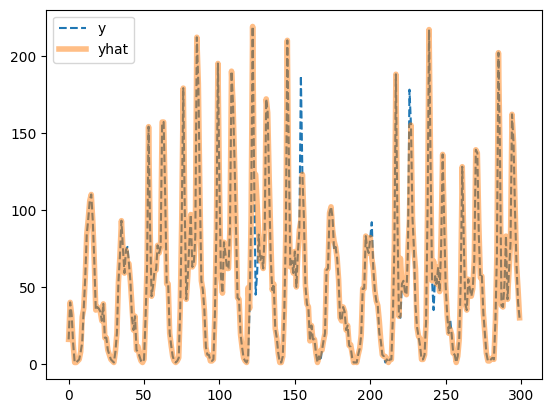
- 잘 맞추는데?.. (수상할 정도로)
B. 제출
- 제출
sampleSubmission['count'] = yyhat
sampleSubmission.to_csv("submission.csv",index=False)
!kaggle competitions submit -c bike-sharing-demand -f submission.csv -m "Message"
!rm submission.csvWarning: Your Kaggle API key is readable by other users on this system! To fix this, you can run 'chmod 600 /home/coco/.kaggle/kaggle.json'
100%|████████████████████████████████████████| 188k/188k [00:02<00:00, 83.1kB/s]
Successfully submitted to Bike Sharing Demand- 순위확인
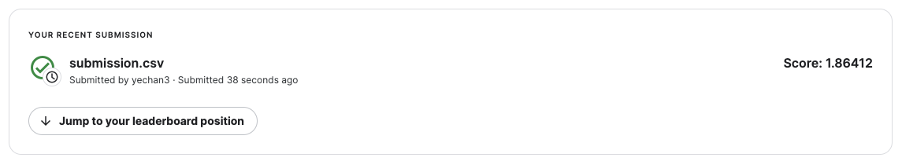
3171/3242 # 냈다면0.9780999383096853- yyhat을 살펴봄
plt.plot(yyhat[:300])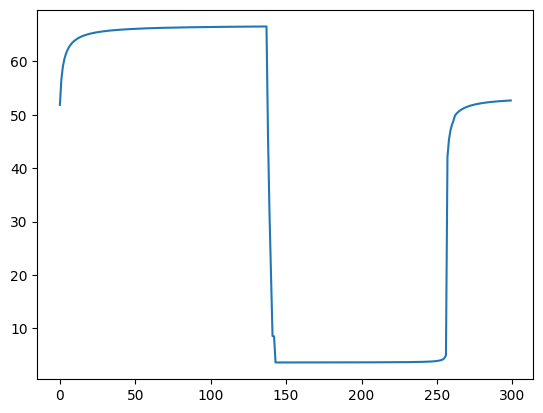
- yhat이랑 모양자체가 너무 다름
5. 적합2 -> 제출2
A. 피처엔지니어링
- 이미 시계열로 적합할 의지가 없으므로 datetime열은 삭제하는게 좋겠음. (인덱스의 역할만 하는 쓸모없는 변수)
df_train_featured = df_train.copy()
df_test_featured = df_test.copy()
#----#
df_train_featured = df_train_featured.drop(['casual','registered'],axis=1)
#--#
df_train_featured = df_train_featured.drop(['datetime'],axis=1)
df_test_featured = df_test_featured.drop(['datetime'],axis=1)B. 적합
- 조용히 적합 (verbosity=False)
# step1 -- pass
# step2
predictr = TabularPredictor(label='count',verbosity=False)
# step3
predictr.fit(df_train_featured)
# step4
yhat = predictr.predict(df_train_featured)
yyhat = predictr.predict(df_test_featured)- 적합결과 시각화
plt.plot(df_train['count'][:300],'--',label='y')
plt.plot(yhat[:300],alpha=0.5,lw=4,label='yhat')
plt.legend()<matplotlib.legend.Legend at 0x7f2d0c215e20>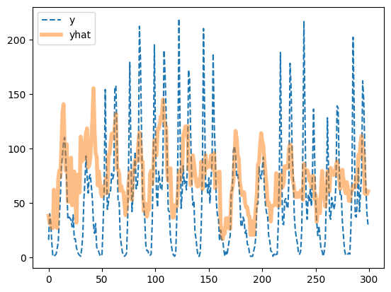
- 오히려 좋아
plt.plot(yyhat[:300],alpha=0.5,lw=4,color='C1')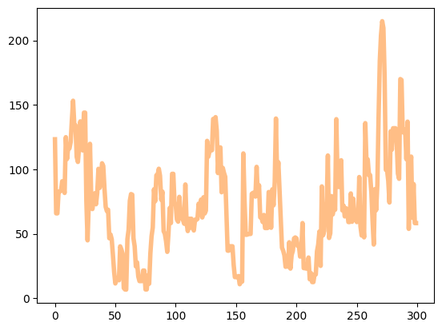
- 더 예쁜 시각화
df = pd.concat([
df_train.assign(count_hat = yhat, dataset_type = 'train'),
df_test.assign(count_hat = yyhat, dataset_type = 'test')
])
df['datetime'] = pd.to_datetime(df['datetime'])
sns.lineplot(
df.sort_values('datetime')[:(24*28)],
x='datetime',y='count',
hue='dataset_type',
linestyle='--',
lw=0.8
)
sns.lineplot(
df.sort_values('datetime')[:(24*28)],
x='datetime',y='count_hat',
hue='dataset_type',
alpha=0.5,
lw=3
)
fig = plt.gcf()
fig.set_size_inches(8,2) # x축 y축 너비조정
plt.xticks(rotation=15); # 글자 기울기 조정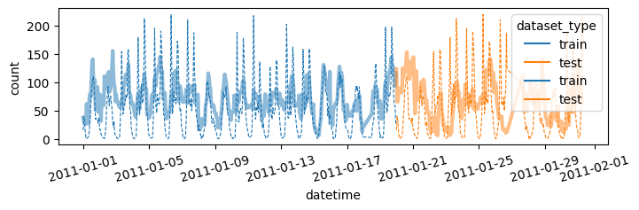
시각화코드를 함수로 구현
def plot(yhat,yyhat):
df = pd.concat([
df_train.assign(count_hat = yhat, dataset_type = 'train'),
df_test.assign(count_hat = yyhat, dataset_type = 'test')
])
df['datetime'] = pd.to_datetime(df['datetime'])
sns.lineplot(
df.sort_values('datetime')[:(24*28)],
x='datetime',y='count',
hue='dataset_type',
linestyle='--',
lw=0.8
)
sns.lineplot(
df.sort_values('datetime')[:(24*28)],
x='datetime',y='count_hat',
hue='dataset_type',
alpha=0.5,
lw=3
)
fig = plt.gcf()
fig.set_size_inches(8,2)
plt.xticks(rotation=15);
fig.show()plot(yhat,yyhat)
C. 제출
- 제출
sampleSubmission['count'] = yyhat
sampleSubmission.to_csv("submission.csv",index=False)
!kaggle competitions submit -c bike-sharing-demand -f submission.csv -m "Message"
!rm submission.csvWarning: Your Kaggle API key is readable by other users on this system! To fix this, you can run 'chmod 600 /home/coco/.kaggle/kaggle.json'
100%|█████████████████████████████████████████| 188k/188k [00:01<00:00, 102kB/s]
Successfully submitted to Bike Sharing Demand- 순위확인
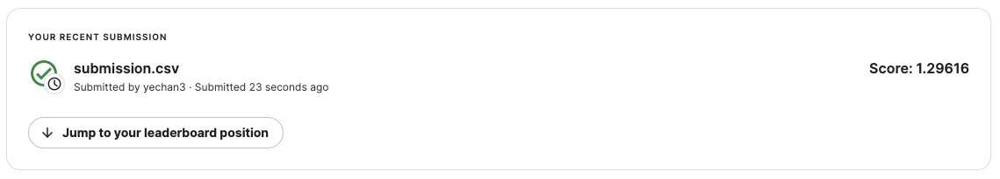
2951/3242 # 냈다면0.9102405922270204D. Pipeline Automation – 싹다 함수로 구현
def fit_predict(df_train_featured, df_test_featured):
# step1 -- pass
# step2
predictr = TabularPredictor(label='count',verbosity=False)
# step3
predictr.fit(df_train_featured)
# step4
yhat = predictr.predict(df_train_featured)
yyhat = predictr.predict(df_test_featured)
# display
display(predictr.leaderboard())
return yhat, yyhat def submit(yyhat):
sampleSubmission['count'] = yyhat
sampleSubmission['count'] = sampleSubmission['count'].apply(lambda x: x if x>0 else 0)
sampleSubmission.to_csv("submission.csv",index=False)
!kaggle competitions submit -c bike-sharing-demand -f submission.csv -m "Message"
!rm submission.csvdef auto(df_train_featured, df_test_featured):
yhat,yyhat = fit_predict(df_train_featured, df_test_featured)
plot(yhat,yyhat)
submit(yyhat)auto(df_train_featured,df_test_featured) model score_val pred_time_val fit_time pred_time_val_marginal fit_time_marginal stack_level can_infer fit_order
0 WeightedEnsemble_L2 -146.942817 0.093126 19.834418 0.000256 0.173803 2 True 12
1 CatBoost -148.454154 0.001523 0.862499 0.001523 0.862499 1 True 6
2 NeuralNetFastAI -148.887325 0.009749 5.793004 0.009749 5.793004 1 True 8
3 LightGBMLarge -149.213280 0.002825 0.750371 0.002825 0.750371 1 True 11
4 LightGBMXT -149.261116 0.011158 0.808311 0.011158 0.808311 1 True 3
5 XGBoost -149.642096 0.006088 0.241403 0.006088 0.241403 1 True 9
6 LightGBM -149.739171 0.001782 0.447107 0.001782 0.447107 1 True 4
7 NeuralNetTorch -151.552860 0.005795 9.768490 0.005795 9.768490 1 True 10
8 ExtraTreesMSE -156.627917 0.030079 0.714512 0.030079 0.714512 1 True 7
9 RandomForestMSE -157.475877 0.031739 0.963428 0.031739 0.963428 1 True 5
10 KNeighborsUnif -165.533975 0.007050 0.052896 0.007050 0.052896 1 True 1
11 KNeighborsDist -176.146340 0.006670 0.050870 0.006670 0.050870 1 True 2
Warning: Your Kaggle API key is readable by other users on this system! To fix this, you can run 'chmod 600 /home/coco/.kaggle/kaggle.json'
100%|████████████████████████████████████████| 243k/243k [00:02<00:00, 98.7kB/s]
Successfully submitted to Bike Sharing Demand| model | score_val | pred_time_val | fit_time | pred_time_val_marginal | fit_time_marginal | stack_level | can_infer | fit_order | |
|---|---|---|---|---|---|---|---|---|---|
| 0 | WeightedEnsemble_L2 | -146.942817 | 0.093126 | 19.834418 | 0.000256 | 0.173803 | 2 | True | 12 |
| 1 | CatBoost | -148.454154 | 0.001523 | 0.862499 | 0.001523 | 0.862499 | 1 | True | 6 |
| 2 | NeuralNetFastAI | -148.887325 | 0.009749 | 5.793004 | 0.009749 | 5.793004 | 1 | True | 8 |
| 3 | LightGBMLarge | -149.213280 | 0.002825 | 0.750371 | 0.002825 | 0.750371 | 1 | True | 11 |
| 4 | LightGBMXT | -149.261116 | 0.011158 | 0.808311 | 0.011158 | 0.808311 | 1 | True | 3 |
| 5 | XGBoost | -149.642096 | 0.006088 | 0.241403 | 0.006088 | 0.241403 | 1 | True | 9 |
| 6 | LightGBM | -149.739171 | 0.001782 | 0.447107 | 0.001782 | 0.447107 | 1 | True | 4 |
| 7 | NeuralNetTorch | -151.552860 | 0.005795 | 9.768490 | 0.005795 | 9.768490 | 1 | True | 10 |
| 8 | ExtraTreesMSE | -156.627917 | 0.030079 | 0.714512 | 0.030079 | 0.714512 | 1 | True | 7 |
| 9 | RandomForestMSE | -157.475877 | 0.031739 | 0.963428 | 0.031739 | 0.963428 | 1 | True | 5 |
| 10 | KNeighborsUnif | -165.533975 | 0.007050 | 0.052896 | 0.007050 | 0.052896 | 1 | True | 1 |
| 11 | KNeighborsDist | -176.146340 | 0.006670 | 0.050870 | 0.006670 | 0.050870 | 1 | True | 2 |
6. 적합3 -> 제출3
A. 시간정보 피처엔지니어링
df_train_featured = df_train.copy()
df_test_featured = df_test.copy()
#----#
df_train_featured = df_train_featured.drop(['casual','registered'],axis=1)
#--#
df_train_featured['hour'] = df_train_featured['datetime'].apply(pd.to_datetime).dt.hour
df_test_featured['hour'] = df_test_featured['datetime'].apply(pd.to_datetime).dt.hour
df_train_featured['weekday'] = df_train_featured['datetime'].apply(pd.to_datetime).dt.weekday
df_test_featured['weekday'] = df_test_featured['datetime'].apply(pd.to_datetime).dt.weekday
#--#
df_train_featured = df_train_featured.drop(['datetime'],axis=1)
df_test_featured = df_test_featured.drop(['datetime'],axis=1)B. 적합 -> 시각화 -> 제출
auto(df_train_featured,df_test_featured) model score_val pred_time_val fit_time pred_time_val_marginal fit_time_marginal stack_level can_infer fit_order
0 WeightedEnsemble_L2 -59.456941 0.102968 64.794636 0.000255 0.167149 2 True 12
1 LightGBMLarge -60.899261 0.007749 1.221596 0.007749 1.221596 1 True 11
2 CatBoost -61.268467 0.003084 24.933573 0.003084 24.933573 1 True 6
3 LightGBM -61.447456 0.021623 1.687860 0.021623 1.687860 1 True 4
4 XGBoost -61.749260 0.007222 0.476288 0.007222 0.476288 1 True 9
5 LightGBMXT -62.400538 0.057122 3.474121 0.057122 3.474121 1 True 3
6 RandomForestMSE -67.993149 0.038693 1.092855 0.038693 1.092855 1 True 5
7 ExtraTreesMSE -68.246627 0.034320 0.640087 0.034320 0.640087 1 True 7
8 NeuralNetTorch -68.927865 0.005912 32.834049 0.005912 32.834049 1 True 10
9 NeuralNetFastAI -70.979733 0.010306 7.108909 0.010306 7.108909 1 True 8
10 KNeighborsDist -115.023130 0.008851 0.055676 0.008851 0.055676 1 True 2
11 KNeighborsUnif -117.802477 0.008756 0.056952 0.008756 0.056952 1 True 1
Warning: Your Kaggle API key is readable by other users on this system! To fix this, you can run 'chmod 600 /home/coco/.kaggle/kaggle.json'
100%|█████████████████████████████████████████| 240k/240k [00:01<00:00, 124kB/s]
Successfully submitted to Bike Sharing Demand| model | score_val | pred_time_val | fit_time | pred_time_val_marginal | fit_time_marginal | stack_level | can_infer | fit_order | |
|---|---|---|---|---|---|---|---|---|---|
| 0 | WeightedEnsemble_L2 | -59.456941 | 0.102968 | 64.794636 | 0.000255 | 0.167149 | 2 | True | 12 |
| 1 | LightGBMLarge | -60.899261 | 0.007749 | 1.221596 | 0.007749 | 1.221596 | 1 | True | 11 |
| 2 | CatBoost | -61.268467 | 0.003084 | 24.933573 | 0.003084 | 24.933573 | 1 | True | 6 |
| 3 | LightGBM | -61.447456 | 0.021623 | 1.687860 | 0.021623 | 1.687860 | 1 | True | 4 |
| 4 | XGBoost | -61.749260 | 0.007222 | 0.476288 | 0.007222 | 0.476288 | 1 | True | 9 |
| 5 | LightGBMXT | -62.400538 | 0.057122 | 3.474121 | 0.057122 | 3.474121 | 1 | True | 3 |
| 6 | RandomForestMSE | -67.993149 | 0.038693 | 1.092855 | 0.038693 | 1.092855 | 1 | True | 5 |
| 7 | ExtraTreesMSE | -68.246627 | 0.034320 | 0.640087 | 0.034320 | 0.640087 | 1 | True | 7 |
| 8 | NeuralNetTorch | -68.927865 | 0.005912 | 32.834049 | 0.005912 | 32.834049 | 1 | True | 10 |
| 9 | NeuralNetFastAI | -70.979733 | 0.010306 | 7.108909 | 0.010306 | 7.108909 | 1 | True | 8 |
| 10 | KNeighborsDist | -115.023130 | 0.008851 | 0.055676 | 0.008851 | 0.055676 | 1 | True | 2 |
| 11 | KNeighborsUnif | -117.802477 | 0.008756 | 0.056952 | 0.008756 | 0.056952 | 1 | True | 1 |
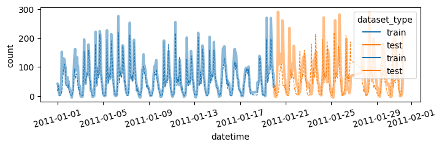
7. 추가적인 피처엔지니어링
A. Step1 – 관련없는 변수 삭제
- 지금까지 수행한 피처엔지니어링
df_train_featured = df_train.copy()
df_test_featured = df_test.copy()
#----#
df_train_featured = df_train_featured.drop(['casual','registered'],axis=1)
#--#
df_train_featured['hour'] = df_train_featured['datetime'].apply(pd.to_datetime).dt.hour
df_test_featured['hour'] = df_test_featured['datetime'].apply(pd.to_datetime).dt.hour
df_train_featured['weekday'] = df_train_featured['datetime'].apply(pd.to_datetime).dt.weekday
df_test_featured['weekday'] = df_test_featured['datetime'].apply(pd.to_datetime).dt.weekday
#--#
df_train_featured = df_train_featured.drop(['datetime'],axis=1)
df_test_featured = df_test_featured.drop(['datetime'],axis=1)sns.heatmap(df_train_featured.set_index('count').reset_index().corr(),vmin=-1,cmap='bwr')<AxesSubplot: >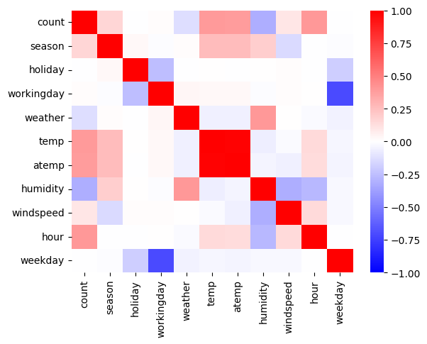
holiday,workingday,weekday는count와 관련이 없어보인다. –> 제외하고 분석
auto(
df_train_featured.drop(['holiday', 'workingday', 'weekday'],axis=1),
df_test_featured.drop(['holiday', 'workingday', 'weekday'],axis=1)
) model score_val pred_time_val fit_time pred_time_val_marginal fit_time_marginal stack_level can_infer fit_order
0 WeightedEnsemble_L2 -100.669244 0.052277 41.755835 0.000254 0.174775 2 True 12
1 CatBoost -101.264453 0.001435 1.276704 0.001435 1.276704 1 True 6
2 LightGBMXT -102.499627 0.011276 0.884664 0.011276 0.884664 1 True 3
3 LightGBMLarge -102.767101 0.002414 0.788208 0.002414 0.788208 1 True 11
4 XGBoost -103.481823 0.002760 0.260296 0.002760 0.260296 1 True 9
5 LightGBM -103.565687 0.004105 0.565680 0.004105 0.565680 1 True 4
6 NeuralNetTorch -104.992742 0.005868 30.550567 0.005868 30.550567 1 True 10
7 NeuralNetFastAI -105.342264 0.009668 7.785035 0.009668 7.785035 1 True 8
8 RandomForestMSE -106.378229 0.032638 1.180547 0.032638 1.180547 1 True 5
9 ExtraTreesMSE -106.730503 0.039648 0.762568 0.039648 0.762568 1 True 7
10 KNeighborsUnif -128.806002 0.007811 0.067189 0.007811 0.067189 1 True 1
11 KNeighborsDist -128.946333 0.007767 0.064981 0.007767 0.064981 1 True 2
Warning: Your Kaggle API key is readable by other users on this system! To fix this, you can run 'chmod 600 /home/coco/.kaggle/kaggle.json'
100%|█████████████████████████████████████████| 242k/242k [00:02<00:00, 113kB/s]
Successfully submitted to Bike Sharing Demand| model | score_val | pred_time_val | fit_time | pred_time_val_marginal | fit_time_marginal | stack_level | can_infer | fit_order | |
|---|---|---|---|---|---|---|---|---|---|
| 0 | WeightedEnsemble_L2 | -100.669244 | 0.052277 | 41.755835 | 0.000254 | 0.174775 | 2 | True | 12 |
| 1 | CatBoost | -101.264453 | 0.001435 | 1.276704 | 0.001435 | 1.276704 | 1 | True | 6 |
| 2 | LightGBMXT | -102.499627 | 0.011276 | 0.884664 | 0.011276 | 0.884664 | 1 | True | 3 |
| 3 | LightGBMLarge | -102.767101 | 0.002414 | 0.788208 | 0.002414 | 0.788208 | 1 | True | 11 |
| 4 | XGBoost | -103.481823 | 0.002760 | 0.260296 | 0.002760 | 0.260296 | 1 | True | 9 |
| 5 | LightGBM | -103.565687 | 0.004105 | 0.565680 | 0.004105 | 0.565680 | 1 | True | 4 |
| 6 | NeuralNetTorch | -104.992742 | 0.005868 | 30.550567 | 0.005868 | 30.550567 | 1 | True | 10 |
| 7 | NeuralNetFastAI | -105.342264 | 0.009668 | 7.785035 | 0.009668 | 7.785035 | 1 | True | 8 |
| 8 | RandomForestMSE | -106.378229 | 0.032638 | 1.180547 | 0.032638 | 1.180547 | 1 | True | 5 |
| 9 | ExtraTreesMSE | -106.730503 | 0.039648 | 0.762568 | 0.039648 | 0.762568 | 1 | True | 7 |
| 10 | KNeighborsUnif | -128.806002 | 0.007811 | 0.067189 | 0.007811 | 0.067189 | 1 | True | 1 |
| 11 | KNeighborsDist | -128.946333 | 0.007767 | 0.064981 | 0.007767 | 0.064981 | 1 | True | 2 |
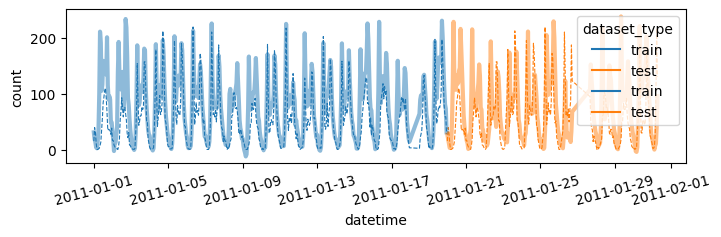
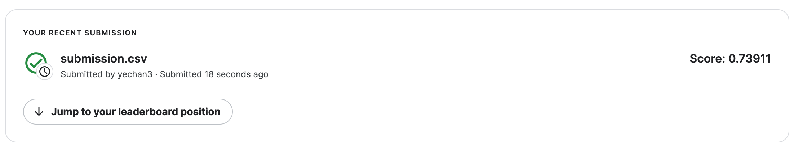
- 안좋아졌음..
- 왜 이런 결과가 나오는가?
- 참고: https://guebin.github.io/DV2023/posts/02wk-1.html
sex = np.array([0,0,0,0]*100+[0] + [1]+[1,1,1,1]*100 + [2]*401)
surv = np.array([0,0,0,0]*100+[1] + [0]+[1,1,1,1]*100 + [0]*401)
surv_conti = surv + np.random.randn(len(surv))*0.1
_df = pd.DataFrame({'sex':sex, 'surv':surv, 'surv_conti':surv_conti})
_df.corr()| sex | surv | surv_conti | |
|---|---|---|---|
| sex | 1.00000 | -0.002160 | 0.006710 |
| surv | -0.00216 | 1.000000 | 0.978614 |
| surv_conti | 0.00671 | 0.978614 | 1.000000 |
sns.scatterplot(_df, x='sex',y='surv_conti',alpha=0.5)<AxesSubplot: xlabel='sex', ylabel='surv_conti'>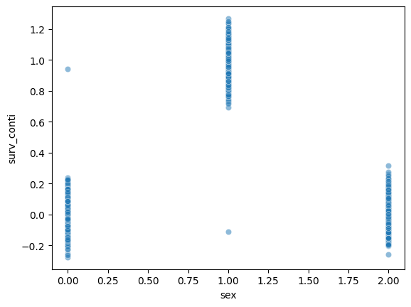
surv_conti.mean()0.33106272309886425sns.heatmap(_df.corr(),cmap='bwr',vmin=-1)<AxesSubplot: >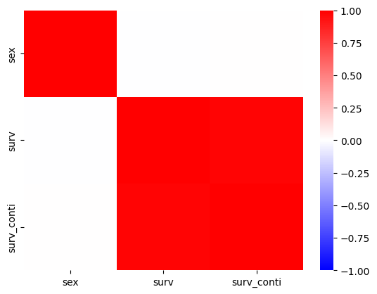
- 우리의 예제
sns.scatterplot(
df_train_featured,
x='holiday',
y='count',
alpha=0.1
)<AxesSubplot: xlabel='holiday', ylabel='count'>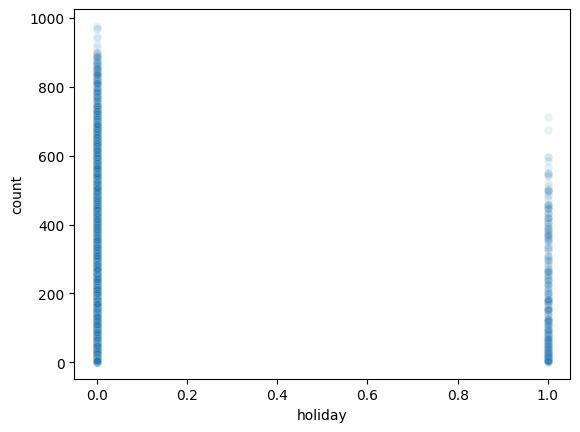
sns.scatterplot(
df_train_featured,
x='weekday',
y='count',
alpha=0.1
)<AxesSubplot: xlabel='weekday', ylabel='count'>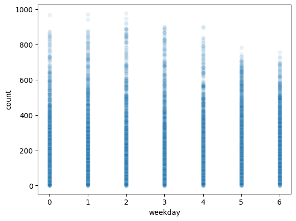
sns.scatterplot(
df_train_featured,
x='workingday',
y='count',
alpha=0.1
)<AxesSubplot: xlabel='workingday', ylabel='count'>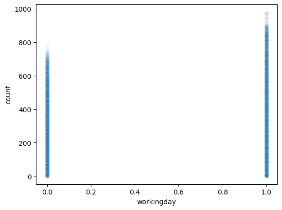
B. Step2 – atemp 혹은 temp 삭제
- 지금까지 한 피처엔지니어링
df_train_featured = df_train.copy()
df_test_featured = df_test.copy()
#----#
df_train_featured = df_train_featured.drop(['casual','registered'],axis=1)
#--#
df_train_featured['hour'] = df_train_featured['datetime'].apply(pd.to_datetime).dt.hour
df_test_featured['hour'] = df_test_featured['datetime'].apply(pd.to_datetime).dt.hour
df_train_featured['weekday'] = df_train_featured['datetime'].apply(pd.to_datetime).dt.weekday
df_test_featured['weekday'] = df_test_featured['datetime'].apply(pd.to_datetime).dt.weekday
#--#
df_train_featured = df_train_featured.drop(['datetime'],axis=1)
df_test_featured = df_test_featured.drop(['datetime'],axis=1)sns.heatmap(df_train_featured.set_index('count').reset_index().corr(),vmin=-1,cmap='bwr')<AxesSubplot: >- temp와 atemp가 동시에 있어서 공선성 문제를 만들 수 있어보임.
- 둘중 하나를 제거하는게 좋을것 같음.
auto(
df_train_featured.drop(['temp'],axis=1),
df_test_featured.drop(['temp'],axis=1)
) model score_val pred_time_val fit_time pred_time_val_marginal fit_time_marginal stack_level can_infer fit_order
0 WeightedEnsemble_L2 -59.511984 0.097477 58.259779 0.000259 0.167847 2 True 12
1 LightGBMLarge -61.029920 0.008677 1.338407 0.008677 1.338407 1 True 11
2 LightGBM -61.580307 0.019255 1.537220 0.019255 1.537220 1 True 4
3 CatBoost -61.849961 0.001914 17.761223 0.001914 17.761223 1 True 6
4 XGBoost -62.741724 0.007695 0.495664 0.007695 0.495664 1 True 9
5 LightGBMXT -63.351618 0.053134 3.360234 0.053134 3.360234 1 True 3
6 ExtraTreesMSE -67.852239 0.036566 0.597020 0.036566 0.597020 1 True 7
7 NeuralNetTorch -68.046825 0.006544 33.599183 0.006544 33.599183 1 True 10
8 RandomForestMSE -68.525817 0.037002 0.909598 0.037002 0.909598 1 True 5
9 NeuralNetFastAI -72.517457 0.009779 6.932450 0.009779 6.932450 1 True 8
10 KNeighborsDist -114.334789 0.008465 0.068125 0.008465 0.068125 1 True 2
11 KNeighborsUnif -116.835940 0.008546 0.069387 0.008546 0.069387 1 True 1
Warning: Your Kaggle API key is readable by other users on this system! To fix this, you can run 'chmod 600 /home/coco/.kaggle/kaggle.json'
100%|█████████████████████████████████████████| 241k/241k [00:01<00:00, 173kB/s]
Successfully submitted to Bike Sharing Demand| model | score_val | pred_time_val | fit_time | pred_time_val_marginal | fit_time_marginal | stack_level | can_infer | fit_order | |
|---|---|---|---|---|---|---|---|---|---|
| 0 | WeightedEnsemble_L2 | -59.511984 | 0.097477 | 58.259779 | 0.000259 | 0.167847 | 2 | True | 12 |
| 1 | LightGBMLarge | -61.029920 | 0.008677 | 1.338407 | 0.008677 | 1.338407 | 1 | True | 11 |
| 2 | LightGBM | -61.580307 | 0.019255 | 1.537220 | 0.019255 | 1.537220 | 1 | True | 4 |
| 3 | CatBoost | -61.849961 | 0.001914 | 17.761223 | 0.001914 | 17.761223 | 1 | True | 6 |
| 4 | XGBoost | -62.741724 | 0.007695 | 0.495664 | 0.007695 | 0.495664 | 1 | True | 9 |
| 5 | LightGBMXT | -63.351618 | 0.053134 | 3.360234 | 0.053134 | 3.360234 | 1 | True | 3 |
| 6 | ExtraTreesMSE | -67.852239 | 0.036566 | 0.597020 | 0.036566 | 0.597020 | 1 | True | 7 |
| 7 | NeuralNetTorch | -68.046825 | 0.006544 | 33.599183 | 0.006544 | 33.599183 | 1 | True | 10 |
| 8 | RandomForestMSE | -68.525817 | 0.037002 | 0.909598 | 0.037002 | 0.909598 | 1 | True | 5 |
| 9 | NeuralNetFastAI | -72.517457 | 0.009779 | 6.932450 | 0.009779 | 6.932450 | 1 | True | 8 |
| 10 | KNeighborsDist | -114.334789 | 0.008465 | 0.068125 | 0.008465 | 0.068125 | 1 | True | 2 |
| 11 | KNeighborsUnif | -116.835940 | 0.008546 | 0.069387 | 0.008546 | 0.069387 | 1 | True | 1 |
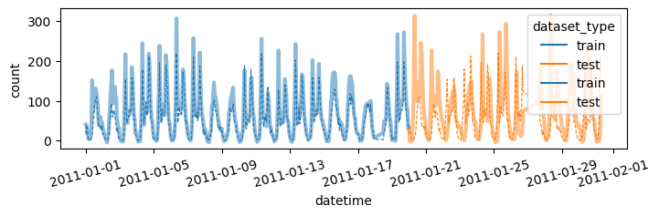
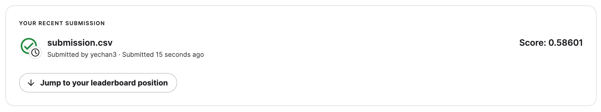
auto(
df_train_featured.drop(['atemp'],axis=1),
df_test_featured.drop(['atemp'],axis=1)
) model score_val pred_time_val fit_time pred_time_val_marginal fit_time_marginal stack_level can_infer fit_order
0 WeightedEnsemble_L2 -59.317972 0.070543 52.287304 0.000294 0.195872 2 True 12
1 LightGBMLarge -60.667457 0.008713 1.374132 0.008713 1.374132 1 True 11
2 CatBoost -60.919338 0.001944 11.113472 0.001944 11.113472 1 True 6
3 LightGBMXT -61.740606 0.037555 2.373389 0.037555 2.373389 1 True 3
4 LightGBM -62.028032 0.016164 1.334948 0.016164 1.334948 1 True 4
5 XGBoost -62.503591 0.006645 0.457786 0.006645 0.457786 1 True 9
6 RandomForestMSE -67.814371 0.032844 0.992604 0.032844 0.992604 1 True 5
7 ExtraTreesMSE -67.843089 0.032126 0.775694 0.032126 0.775694 1 True 7
8 NeuralNetTorch -68.163726 0.005872 35.895491 0.005872 35.895491 1 True 10
9 NeuralNetFastAI -71.526328 0.009695 6.962153 0.009695 6.962153 1 True 8
10 KNeighborsDist -112.678494 0.008421 0.068928 0.008421 0.068928 1 True 2
11 KNeighborsUnif -115.103505 0.008441 0.070454 0.008441 0.070454 1 True 1
Warning: Your Kaggle API key is readable by other users on this system! To fix this, you can run 'chmod 600 /home/coco/.kaggle/kaggle.json'
100%|█████████████████████████████████████████| 241k/241k [00:02<00:00, 108kB/s]
Successfully submitted to Bike Sharing Demand| model | score_val | pred_time_val | fit_time | pred_time_val_marginal | fit_time_marginal | stack_level | can_infer | fit_order | |
|---|---|---|---|---|---|---|---|---|---|
| 0 | WeightedEnsemble_L2 | -59.317972 | 0.070543 | 52.287304 | 0.000294 | 0.195872 | 2 | True | 12 |
| 1 | LightGBMLarge | -60.667457 | 0.008713 | 1.374132 | 0.008713 | 1.374132 | 1 | True | 11 |
| 2 | CatBoost | -60.919338 | 0.001944 | 11.113472 | 0.001944 | 11.113472 | 1 | True | 6 |
| 3 | LightGBMXT | -61.740606 | 0.037555 | 2.373389 | 0.037555 | 2.373389 | 1 | True | 3 |
| 4 | LightGBM | -62.028032 | 0.016164 | 1.334948 | 0.016164 | 1.334948 | 1 | True | 4 |
| 5 | XGBoost | -62.503591 | 0.006645 | 0.457786 | 0.006645 | 0.457786 | 1 | True | 9 |
| 6 | RandomForestMSE | -67.814371 | 0.032844 | 0.992604 | 0.032844 | 0.992604 | 1 | True | 5 |
| 7 | ExtraTreesMSE | -67.843089 | 0.032126 | 0.775694 | 0.032126 | 0.775694 | 1 | True | 7 |
| 8 | NeuralNetTorch | -68.163726 | 0.005872 | 35.895491 | 0.005872 | 35.895491 | 1 | True | 10 |
| 9 | NeuralNetFastAI | -71.526328 | 0.009695 | 6.962153 | 0.009695 | 6.962153 | 1 | True | 8 |
| 10 | KNeighborsDist | -112.678494 | 0.008421 | 0.068928 | 0.008421 | 0.068928 | 1 | True | 2 |
| 11 | KNeighborsUnif | -115.103505 | 0.008441 | 0.070454 | 0.008441 | 0.070454 | 1 | True | 1 |
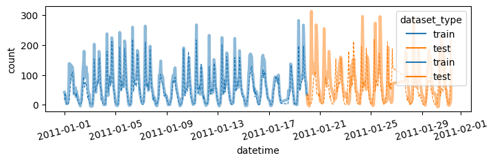
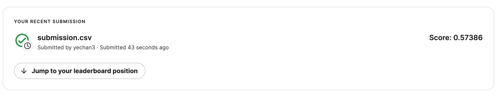
C. Step3 – season을 범주로?
- 지금까지한 피처엔지니어링
df_train_featured = df_train.copy()
df_test_featured = df_test.copy()
#----#
df_train_featured = df_train_featured.drop(['casual','registered'],axis=1)
#--#
df_train_featured['hour'] = df_train_featured['datetime'].apply(pd.to_datetime).dt.hour
df_test_featured['hour'] = df_test_featured['datetime'].apply(pd.to_datetime).dt.hour
df_train_featured['weekday'] = df_train_featured['datetime'].apply(pd.to_datetime).dt.weekday
df_test_featured['weekday'] = df_test_featured['datetime'].apply(pd.to_datetime).dt.weekday
#--#
df_train_featured = df_train_featured.drop(['datetime'],axis=1)
df_test_featured = df_test_featured.drop(['datetime'],axis=1)
#--#
df_train_featured = df_train_featured.drop(['atemp'],axis=1)
df_test_featured = df_test_featured.drop(['atemp'],axis=1)- 사실 season의 의미는 season - 1 = spring, 2 = summer, 3 = fall, 4 = winter 임
- 지금은 season이 1,2,3,4로 코딩되어 있는데, 이것을 문자열로 바꾸면 더 좋지 않을까?
auto(
df_train_featured.assign(season = df_train_featured.season.map({1:'spring',2:'summer',3:'fall',4:'winter'})),
df_test_featured.assign(season = df_train_featured.season.map({1:'spring',2:'summer',3:'fall',4:'winter'}))
) model score_val pred_time_val fit_time pred_time_val_marginal fit_time_marginal stack_level can_infer fit_order
0 WeightedEnsemble_L2 -58.809100 0.124894 88.477947 0.000289 0.195235 2 True 12
1 LightGBMXT -61.072683 0.087661 4.569525 0.087661 4.569525 1 True 3
2 LightGBMLarge -61.188052 0.012944 1.727106 0.012944 1.727106 1 True 11
3 CatBoost -62.040378 0.006600 47.570805 0.006600 47.570805 1 True 6
4 LightGBM -62.161719 0.018669 1.587194 0.018669 1.587194 1 True 4
5 XGBoost -62.183089 0.010632 0.598557 0.010632 0.598557 1 True 9
6 NeuralNetTorch -67.358419 0.006769 33.816719 0.006769 33.816719 1 True 10
7 RandomForestMSE -68.346914 0.032818 1.102551 0.032818 1.102551 1 True 5
8 ExtraTreesMSE -68.569688 0.035215 0.590428 0.035215 0.590428 1 True 7
9 NeuralNetFastAI -72.355712 0.012358 7.412937 0.012358 7.412937 1 True 8
10 KNeighborsDist -113.647125 0.008502 0.069228 0.008502 0.069228 1 True 2
11 KNeighborsUnif -116.110797 0.008447 0.071381 0.008447 0.071381 1 True 1
Warning: Your Kaggle API key is readable by other users on this system! To fix this, you can run 'chmod 600 /home/coco/.kaggle/kaggle.json'
100%|█████████████████████████████████████████| 240k/240k [00:01<00:00, 124kB/s]
Successfully submitted to Bike Sharing Demand| model | score_val | pred_time_val | fit_time | pred_time_val_marginal | fit_time_marginal | stack_level | can_infer | fit_order | |
|---|---|---|---|---|---|---|---|---|---|
| 0 | WeightedEnsemble_L2 | -58.809100 | 0.124894 | 88.477947 | 0.000289 | 0.195235 | 2 | True | 12 |
| 1 | LightGBMXT | -61.072683 | 0.087661 | 4.569525 | 0.087661 | 4.569525 | 1 | True | 3 |
| 2 | LightGBMLarge | -61.188052 | 0.012944 | 1.727106 | 0.012944 | 1.727106 | 1 | True | 11 |
| 3 | CatBoost | -62.040378 | 0.006600 | 47.570805 | 0.006600 | 47.570805 | 1 | True | 6 |
| 4 | LightGBM | -62.161719 | 0.018669 | 1.587194 | 0.018669 | 1.587194 | 1 | True | 4 |
| 5 | XGBoost | -62.183089 | 0.010632 | 0.598557 | 0.010632 | 0.598557 | 1 | True | 9 |
| 6 | NeuralNetTorch | -67.358419 | 0.006769 | 33.816719 | 0.006769 | 33.816719 | 1 | True | 10 |
| 7 | RandomForestMSE | -68.346914 | 0.032818 | 1.102551 | 0.032818 | 1.102551 | 1 | True | 5 |
| 8 | ExtraTreesMSE | -68.569688 | 0.035215 | 0.590428 | 0.035215 | 0.590428 | 1 | True | 7 |
| 9 | NeuralNetFastAI | -72.355712 | 0.012358 | 7.412937 | 0.012358 | 7.412937 | 1 | True | 8 |
| 10 | KNeighborsDist | -113.647125 | 0.008502 | 0.069228 | 0.008502 | 0.069228 | 1 | True | 2 |
| 11 | KNeighborsUnif | -116.110797 | 0.008447 | 0.071381 | 0.008447 | 0.071381 | 1 | True | 1 |
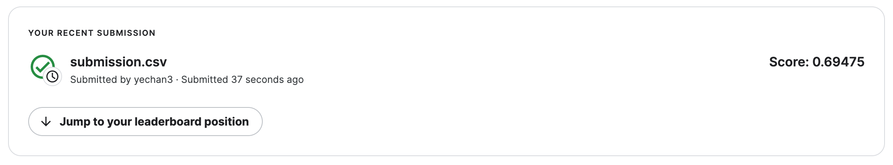
- 이건 적용하지 말자.
- 어차피 트리계열은 명목형변수를 순서형변수로 잘못 적용해도 크게 상관없음.
D. Step4 – \(y\)의 분포
- 지금까지한 피처엔지니어링
df_train_featured = df_train.copy()
df_test_featured = df_test.copy()
#----#
df_train_featured = df_train_featured.drop(['casual','registered'],axis=1)
#--#
df_train_featured['hour'] = df_train_featured['datetime'].apply(pd.to_datetime).dt.hour
df_test_featured['hour'] = df_test_featured['datetime'].apply(pd.to_datetime).dt.hour
df_train_featured['weekday'] = df_train_featured['datetime'].apply(pd.to_datetime).dt.weekday
df_test_featured['weekday'] = df_test_featured['datetime'].apply(pd.to_datetime).dt.weekday
#--#
df_train_featured = df_train_featured.drop(['datetime'],axis=1)
df_test_featured = df_test_featured.drop(['datetime'],axis=1)
#--#
df_train_featured = df_train_featured.drop(['atemp'],axis=1)
df_test_featured = df_test_featured.drop(['atemp'],axis=1)df_train_featured['count'].hist() # 정규분포가 아니네<AxesSubplot: >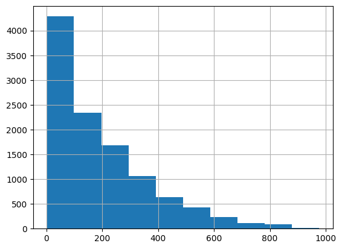
transfomr = sklearn.preprocessing.PowerTransformer(method='box-cox')count2 = transfomr.fit_transform(df_train_featured[['count']]).reshape(-1)
plt.hist(count2);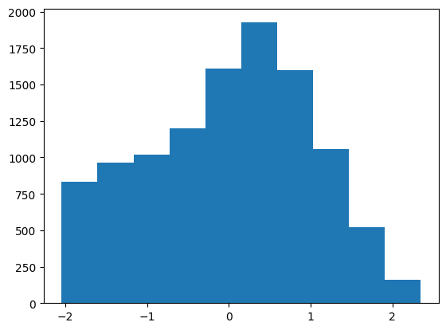
df_train_featured.assign(count = count2)| season | holiday | workingday | weather | temp | humidity | windspeed | count | hour | weekday | |
|---|---|---|---|---|---|---|---|---|---|---|
| 0 | 1 | 0 | 0 | 1 | 9.84 | 81 | 0.0000 | -1.255010 | 0 | 5 |
| 1 | 1 | 0 | 0 | 1 | 9.02 | 80 | 0.0000 | -0.801417 | 1 | 5 |
| 2 | 1 | 0 | 0 | 1 | 9.02 | 80 | 0.0000 | -0.924248 | 2 | 5 |
| 3 | 1 | 0 | 0 | 1 | 9.84 | 75 | 0.0000 | -1.340805 | 3 | 5 |
| 4 | 1 | 0 | 0 | 1 | 9.84 | 75 | 0.0000 | -2.043720 | 4 | 5 |
| ... | ... | ... | ... | ... | ... | ... | ... | ... | ... | ... |
| 10881 | 4 | 0 | 1 | 1 | 15.58 | 50 | 26.0027 | 0.928271 | 19 | 2 |
| 10882 | 4 | 0 | 1 | 1 | 14.76 | 57 | 15.0013 | 0.576172 | 20 | 2 |
| 10883 | 4 | 0 | 1 | 1 | 13.94 | 61 | 15.0013 | 0.233448 | 21 | 2 |
| 10884 | 4 | 0 | 1 | 1 | 13.94 | 61 | 6.0032 | 0.006178 | 22 | 2 |
| 10885 | 4 | 0 | 1 | 1 | 13.12 | 66 | 8.9981 | -0.291061 | 23 | 2 |
10886 rows × 10 columns
- 적합
# step1 -- pass
# step2
predictr = TabularPredictor(label='count',verbosity=False)
# step3
predictr.fit(df_train_featured.assign(count = count2))
# step4
yhat = predictr.predict(df_train_featured)
yyhat = predictr.predict(df_test_featured)yhat = transfomr.inverse_transform(yhat.to_frame()).reshape(-1)
yyhat = transfomr.inverse_transform(yyhat.to_frame()).reshape(-1)plot(yhat,yyhat)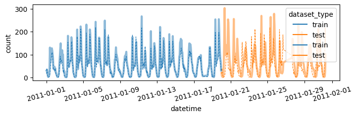
submit(yyhat)Warning: Your Kaggle API key is readable by other users on this system! To fix this, you can run 'chmod 600 /home/coco/.kaggle/kaggle.json'
100%|████████████████████████████████████████| 243k/243k [00:02<00:00, 96.3kB/s]
Successfully submitted to Bike Sharing Demand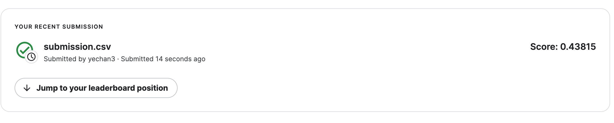
8. HW
box-cox transform이 아닌 log1p변환을 취해서 결과를 구해볼 것
- y에 0값이 많으므로 log에 1더한 log1p함수를 이용하는 것임.
np.log1p(0.1234), np.log(0.1234+1)np.expm1(0.11635980111619529)결과는 아래와 같음
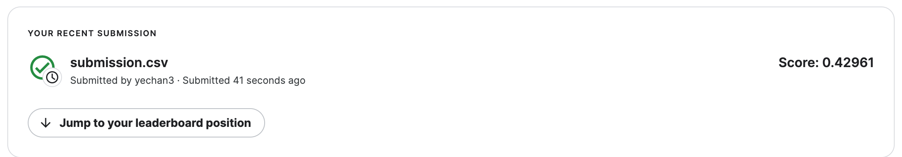
count3 = np.log1p(df_train_featured['count'])
count30 2.833213
1 3.713572
2 3.496508
3 2.639057
4 0.693147
...
10881 5.820083
10882 5.488938
10883 5.129899
10884 4.867534
10885 4.488636
Name: count, Length: 10886, dtype: float64plt.hist(count3)(array([ 237., 462., 625., 626., 805., 1076., 1768., 2544., 2058.,
685.]),
array([0.69314718, 1.31238343, 1.93161968, 2.55085593, 3.17009218,
3.78932843, 4.40856467, 5.02780092, 5.64703717, 6.26627342,
6.88550967]),
<BarContainer object of 10 artists>)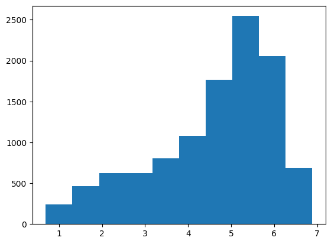
df_train_featured.assign(count = count3)| season | holiday | workingday | weather | temp | humidity | windspeed | count | hour | weekday | |
|---|---|---|---|---|---|---|---|---|---|---|
| 0 | 1 | 0 | 0 | 1 | 9.84 | 81 | 0.0000 | 2.833213 | 0 | 5 |
| 1 | 1 | 0 | 0 | 1 | 9.02 | 80 | 0.0000 | 3.713572 | 1 | 5 |
| 2 | 1 | 0 | 0 | 1 | 9.02 | 80 | 0.0000 | 3.496508 | 2 | 5 |
| 3 | 1 | 0 | 0 | 1 | 9.84 | 75 | 0.0000 | 2.639057 | 3 | 5 |
| 4 | 1 | 0 | 0 | 1 | 9.84 | 75 | 0.0000 | 0.693147 | 4 | 5 |
| ... | ... | ... | ... | ... | ... | ... | ... | ... | ... | ... |
| 10881 | 4 | 0 | 1 | 1 | 15.58 | 50 | 26.0027 | 5.820083 | 19 | 2 |
| 10882 | 4 | 0 | 1 | 1 | 14.76 | 57 | 15.0013 | 5.488938 | 20 | 2 |
| 10883 | 4 | 0 | 1 | 1 | 13.94 | 61 | 15.0013 | 5.129899 | 21 | 2 |
| 10884 | 4 | 0 | 1 | 1 | 13.94 | 61 | 6.0032 | 4.867534 | 22 | 2 |
| 10885 | 4 | 0 | 1 | 1 | 13.12 | 66 | 8.9981 | 4.488636 | 23 | 2 |
10886 rows × 10 columns
- 적합
# step1 -- pass
# step2
predictr = TabularPredictor(label='count',verbosity=False)
# step3
predictr.fit(df_train_featured.assign(count = count3))
# step4
yhat = predictr.predict(df_train_featured)
yyhat = predictr.predict(df_test_featured)yhat = np.expm1(yhat)
yyhat = np.expm1(yyhat)plot(yhat,yyhat)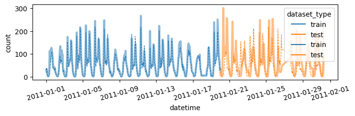
submit(yyhat)Warning: Your Kaggle API key is readable by other users on this system! To fix this, you can run 'chmod 600 /home/coco/.kaggle/kaggle.json'
100%|█████████████████████████████████████████| 242k/242k [00:02<00:00, 115kB/s]
Successfully submitted to Bike Sharing Demand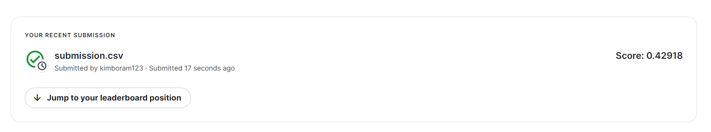